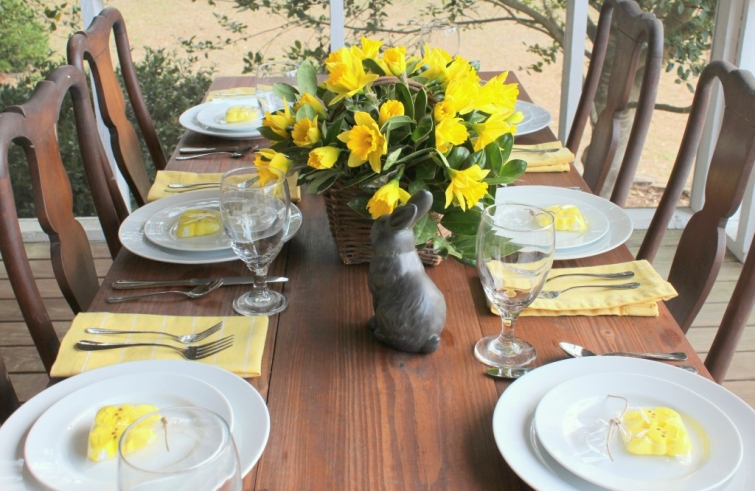
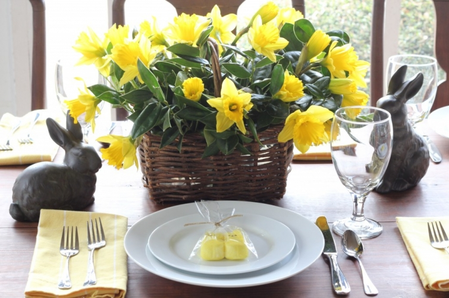

.png)
.PNG)
.PNG)
.PNG)
.PNG)
.PNG)
.JPG)
.JPG)
.PNG)
.PNG)


I hope you have had a wonderfully blessed Easter Sunday… a day to reflect on God’s love for all of us. Our day has been full of food (which seems to be the norm with any holiday – religious or not!) The plans for this day have changed a dozen times in the last week. Originally, I had thought our sons would be here, and we would have our lunch out on the porch.

I had the table setting all planned out with little candy Peeps bagged at each place setting.

But as things sometimes happen, they will not be here until next weekend. And then the good old weatherman predicted rain and thunderstorms…so I set up the table in the dining room instead.

But it was sunny as could be at lunch, so we could have eaten out on the porch anyway. Oh well. (It is storming now.)

I decided to use little chocolate bunnies with green “grass” and white chocolate candy eggs for this place setting. (Don’t ask me why…I just liked it better. 🙂 )Kroger had these gorgeous daffodils in a bucket, and I couldn’t resist. They are just so cheerful and really look like spring to me. I think I am going to try to plant them in mass out in our yard at the edge of the woods next fall, so that we will have lots of blooms next year in the spring.

With the change in number of people here for lunch, I changed our menu. Originally, I was going to prepare a traditional Easter meal of baked ham with a variety of vegetables and a coconut cake for dessert.
I decided instead to go for something more like a brunch menu this year.

The cheese pudding comes out of the oven like a puffy souffle, and then it sinks… but it is still delicious. I am not even going to show you my biscuits. I am absolutely awful at making bread, so these angel biscuits were the devil to me! I was halving the recipe (and talking with my daughter) and I forgot to halve the buttermilk. I remembered the instant I poured it into the flour though. 🙁 So I added more flour and sugar, but they did NOT look like angel biscuits when they came out of the oven. My goal this year is to perfect those babies. (So we will be having lots of biscuits this year…the good, the bad, and the ugly.)

The carrot cake turned out nice and moist, but I missed the pecans that are traditionally in it. I left them out of the cake since my daughter doesn’t care for them. (They only got stuck on the icing – not mixed in it – so she could pick them out.) Next time, I will make her a different dessert. Carrot cakes need pecans.


There was a little touch of Easter in the cabinet in the dining room.

Here are the Easter baskets for our big kids. Each basket has a “movie night” in it with a movie, popcorn, candy, and drinks. Here is the one for our daughter…
and here are the ones for our sons.
It was a very nice quiet day, and the storms tonight make it even more cozy. This is the beginning of my spring break, so I have a little time to slow down and catch my breath here before the last couple of months of the school year play out. As I think about all of our many blessings on this Easter Sunday, I count all of you as a big blessing for me. Thank you for reading, for leaving your always sweet comments, and for your kind emails. You can’t imagine how much all of it truly means to me. I wish I could invite you over for a lunch out on the porch. I know it would be great fun! 🙂

So how did you spend your Sunday…lunch on a porch somewhere? I hope it was a good day for you and your family.
Happy Easter!


.PNG)
WOW! I must of missed this post last Easter, Everything looks wonderful. these are the kinds of Easter baskets I make my family, since my “babies” are now 11 & 15 they no longer like the toy baskets. they usually have a book or movie request so it always gives me a theme to work with, your post gave me an idea for my newlywed sister in law and her hubby. Thanks. it’s funny or sad but I like/do a lot of the same things but my items(I do the Easter candies in bags for the teachers at my campus) don’t look as nice as yours do all put together. have a blessed Easter! Thanks for the inspiration.
————————————————————
Yep, these are good baskets for older kids. I need to get to thinking on this year’s baskets. It will be Easter before we know it! You have a blessed Easter too. Thank you for leaving your sweet comment here, Row.
Kelly
Happy Easter! I spent my Easter on the porch at the lake house, with family and only peeks of sun. Beautiful table settings nothing says spring like daffodils and bunnies. Hope you enjoyed your spring break, sad the weather is going to be much better next week.
Kelly,
Your table was beautiful and I love the menu. My mouth was watering for all of the selections, especially the carrot cake, which is my favorite!
We had a lovely Easter in Austin with our oldest son, DIL and darling granddaughter.
Happy Spring.
Karen
Kelly,
I love the kids baskets! They are just perfect! I also loved the chocolate bunnys with grass and eggs! I made little nests with eggs but melting butterscotch chips and then mixing in chow mein noodles. Then I formed them into little nests with 3 speckled peanut butter m-n-m eggs on each one. The place settings looked so festive with those on each plate. I might do your cute bunny combo for the teachers I teach with next year. This year I made them each a chick out of a brownie. Our Easter celebration was very nice this year also. The weather has been so Spring like finally. Have a great break!
Your menu sounds wonderful. Table is beautiful, as always.
I love the baskets for your older kids. One is never too old to enjoy a basket filled with happiness. 🙂
beautiful! I love the yellow flowers and yellow peep favors!
Girl, you are A.M.A.Z.I.N.G. Your tables look beautiful, your menu is unbelievable and I’m dying to have the recipe for the cheese souffle and the carrot cake!!!
Beautiful table setting!! I loved everything from the treats on each plate to the drink dispenser and cake set up! I would just love to have a dinner with you!!! sigh.
I just love you and your blog. My sister’s name is Kelly too!
Beautiful place setting. A hint from one southern gal to another. Go to Walmart and get the frozen biscuits already premade. These are not “whop” biscuits in a can, they are frozen and all you do is bake them. They are delicious and just right for some apple butter or jam. No one will be the wiser. I would love any advice on how to have family get togethers when the kids are grown and scattered and elderly parents aren’t able to travel. It got the best of me this year.
Blessings on this first day of April!
Your Easter table was beautiful, Kelly. Daffodils are my absolute favorite!
This was our first Easter without the kiddos at home. 🙁 Their spring breaks this year did not coincide with the holiday, but we’ll get to visit with both of them in the next week or so. We did enjoy a nice, low-key, day at home though – waiting on those rains. We snuggled in and spent the whole day watching old movies – one of my favorite things to do.
Your carrot cake looks wonderful! Our wedding cake was a carrot cake. It has always been one of my favorites. 🙂 And you are right, carrot cake definitely needs pecans.
Hello Kelly.
Oh my, I had to chuckle when I read about your biscuits. You see on Good Friday when I was making hot cross buns I halved the recipe too. First, I almost put in two eggs instead of one. Caught my mistake just in time. Then, I was kneading the dough and realized I had left out the raisins! Oh my heavens how stunned am I? But I just kneaded some in and you know what, all those hot cross buns got eaten up just the same 🙂 Love your blog, read it daily.
Cheers,
Beth
happy april 1st kelly! i love the “peep” packaging…i’m going to keep that in mind for next year for the grandbabies (and big kids too)! we had predictions of rain here too but thankfully it held off until last night so some of us ate out on the patio…that was nice.
hope you have a relaxing spring break and get some well deserved rest.
I just love reading your posts Kelly and how you entertain your family. You just have a warmness that spills into all the details you put together. From your beautiful spread, to detailed lunch menu to the thoughtful baskets..no details are ever missed. Coming to your home is like visiting a real life bed and breakfast..only even better. I hope it was a wonderful day for you all. Happy Easter!
Beautiful as usual Kelly!! I do make a mean biscuit myself but I just make regular old time biscuits. I do not really use measurements as I watched my mom make hers and she just adds til it looks right!! I do use half sweet milk and half buttermilk in mine. Only White Lily Flour and Crisco will do for the other ingredients. And a HOT oven is absolutely necessary. I know you will perfect your recipe soon! And I also agree with you, a carrot cake is a sad thing without lots of pecans…lol. Movie night Easter basket was a great idea…I might do that for my adult kids next year. Thanks for sharing.
I’m drooling… This is beautiful and looks so yummy! I was doing fine, enjoying the pretty daffodils, and then I got to the carrot cake. That cake looks fabulous! And the Easter baskets are great, too! I love all of your photos. Keep up the great work, Aunt Kelly. Summer’s right around the corner, and then you can kick up your feet and relax.
-Sarah
I don’t know where to begin, so much to comment on. I haven’t been here long but always love reading your blog as well as what everyone posts. Loving, too, both tablescapes, what gorgeous daffodils, they always are one of the first signs of spring! And the favors, so sweet – would want the bunny and eggs, no Peeps for me. And, then what you wrote about “us” and how much it all means to you, made me tear up. I wish we could all get together, talk, eat, shop, etc. – seem to be a lot of kindred spirits here. Enjoy the school break, Kelly.
Hi Kelly, Beautiful Easter table. We too enjoyed roasted asparagus! Of course, the traditional ham, cheesy potatoes, roasted carrots, homemade biscuits and mini cheesecakes for dessert. It was a wonderful day with family. Had a beautiful church service in the morning. It was rainy in the morning here in Michigan, then the sun came out in once we arrived home from church and it was a beautiful day! I picked up one of those bunnies you had on your table from Target also! Love those! Have a great week!
Your table and meal look beautiful and inviting! What is it about talking and cooking that is so distracting? I was making a sauce and tried to thicken it with baking powder (which I had out on the counter for another recipe) instead of corn starch. Well…it didn’t thicken. Fortuntely, I realized my error in time to dump the “bad” sauce and start over. Enjoy your spring break and be good to yourself!
Thanks for sharing your Easter with me. My Easter included taking a son back to college to finish his first year; although,it was nice to have at least two of my three sons home this weekend. I’ve enjoyed your posts and pictures. One of your recent posts actually showed me where my son’s summer job will be.
Beautiful as usual! Happy Easter!
Hi Kelly, Glad you had a great Easter! Your table is lovely. I’m with you – carrot cakes do need pecans.
We had a lovely Easter even though in was raining here in Tennessee. Had to have the Easter egg hunt in doors at church for the little ones today.
We had our daughter and her family here for a big dinner.I still make Easter baskets for them all and our grand daughters are 14 and 18 . even make one for daughter and son in law. I am a big one for holidays. want them to have good memories of being with Grammy and Poppy for the holidays .Family is so important to me.
You Easter decorations look great. and keep making those biscuits.You will be a pro in no time . Have a wonderful spring break. Yarlette
Enjoyed your Easter post. I,too, have been working on my bread making this year. Regular biscuits, yeast rolls and cornbread conquered! I have not been able to get the angel biscuits to work for me. Will you please share your recipe? You were well represented at our celebration today–used the linen like paper napkins with added stickers of Easter eggs–and placed the copper plant sign with your beautiful chalk lettering in my live mixed colored tulips as our centerpiece! And I do believe the copper helped them straighten up even though it is an old wives tale! These items were in my basket from you!
I enjoyed reading about your day. I smiled when I read about the grown up baskets. My 19 year old son still humors me, and hunts eggs every year. I, of course, fill them with things like movie tickets, Snickers bars, gas card, etc. I’m a BIG fan of brunch, anytime – especially on Easter Sunday. So we enjoyed brunch by fireside, and a quiet afternoon followed. It was a glorious day. Happy Easter, Kelly!
I am so glad to see I am not the only one who still does Easter Baskets for her grown children. My son and daughter look forward to their grown up baskets each year. Your table is lovely and the yellow is absolutely beautiful. I understand your plight with angel biscuits; mine are like Ellie Mae’s on Beverly Hillbillies. I continue to strive for the perfect biscuit. I know your guests enjoyed the Easter Menu. I spent the morning at church and then visited dear friends to share in their Easter Celebrations with family. It was a lovely day!
Your table setting looks lovely and fresh! The daffodils in our yard bloomed a month ago. Good luck with the ones you plant.
We had our first Easter egg hunt with our one year old granddaughter yesterday and it was a blast watching her hunt eggs and clapping each time she found one. So since we had our Easter get together yesterday, we had a very relaxing and lazy day after church. It was nice!
Cheese pudding and roasted asparagus – now I’m hungry all over again!!! YUM!
What a beautiful table and cute baskets you created…sounds like you had a wonderful Easter…I did an Easter buffet for my family and my granddaughters little friends and family….she had a great time with our tradition of an Easter Egg Hunt, but this year she was able to share it with your little friends…had a house full, and that made me happy!
Happy Easter!!! The weather was beautiful and we had a blast watching the kids hunt eggs… I also sat at the kids table on the back porch 🙂 A fabulous day with family & friends! Enjoy spring break!!!
As always, I so enjoyed your post. Your table was lovely and the menu sounds delicious. Love the flexibility we must have with our children.